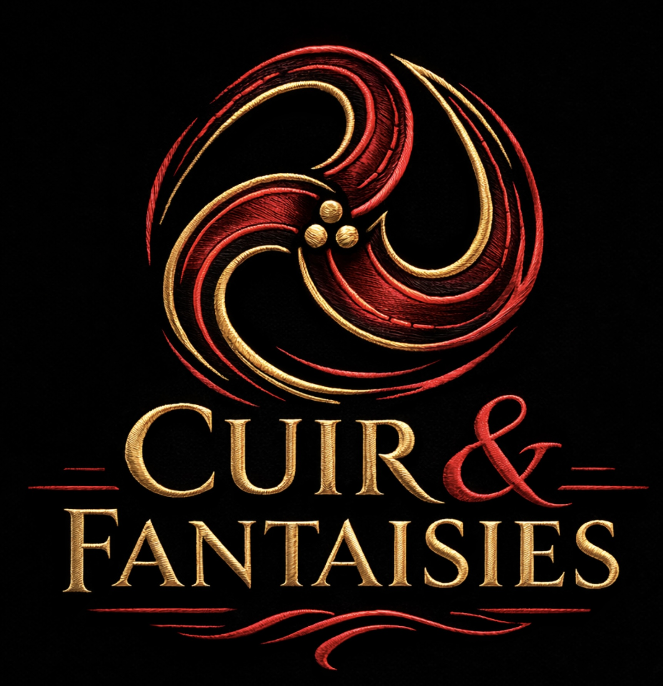

Studio photographique
Portraits éditoriaux, boudoir stylisé, ambiances sombres, séances duo et mises en scène élégantes dans un décor à forte personnalité.
Studio signature · photographie · univers immersif
Un studio de photographie inspiré du BDSM élégant, pensé comme un lieu d’esthétique, de découverte et d’immersion. Ici, l’image devient atmosphère, présence et expérience.

Le concept
Cuir & Fantaisies présente un univers où la direction artistique, les décors, la lumière et les textures rencontrent l’imaginaire du BDSM raffiné. Le site propose à la fois un accès au studio photographique, une entrée vers le donjon comme espace de mise en scène et de découverte, ainsi qu’une présentation des présences qui façonnent cette signature.
Portraits éditoriaux, boudoir stylisé, ambiances sombres, séances duo et mises en scène élégantes dans un décor à forte personnalité.
Une approche esthétique et immersive qui met l’accent sur l’atmosphère, le cadre, la tension visuelle et la découverte encadrée d’un monde codé.
Pour les personnes déjà connues du lieu, le Salon ouvre l’accès à des services plus personnalisés, confidentiels et approfondis.
Le donjon
Le donjon n’est pas seulement un décor. C’est une pièce de caractère. Cuir, métal, obscurité, éclats dorés, rouge profond et lignes de force composent un espace qui donne au regard une densité particulière.
Pensé comme un lieu de découverte, il invite à observer, ressentir, explorer l’esthétique d’un univers codifié sans jamais sacrifier l’élégance.
Le studio photo
Une photographie à la fois éditoriale, intime, cinématographique et texturée, portée par les noirs profonds, les reflets rouges, les détails dorés et la force des postures.
Regard, posture, présence, direction artistique précise.
Une sensualité stylisée, plus évocatrice que démonstrative.
Jeu d’équilibre, tension visuelle, relation et mise en scène.
Cuir, métal, mains, accessoires, lignes et textures profondes.
Section privée
Un espace réservé aux clients connus du lieu, conçu pour accéder à des services plus personnalisés, plus poussés et plus confidentiels.
Cette section est fermée par un code spécial et ne constitue pas une porte d’entrée publique.
Prise de contact
Pour une séance photo, une découverte du lieu ou une demande plus ciblée, une prise de contact sobre, claire et respectueuse permet d’ouvrir la conversation.